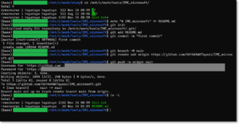

梨下村塾@令和4（2022）年11月14日
～githubにIMEの辞書をプッシュしてみよう～
Table of Contents
1. 大まかな手順
| 順番 | 操作対象 | 操作の概要 | 操作の詳細 |
| 1 | github.com | リモートリポジトリの作成 | github.com上にリモートリポジトリを作る。 |
| 2 | 手元のPCて | IME辞書の登録 | IMEの辞書に短縮よみなどを登録する。 |
| 3 | 手元のPC | 辞書のエクスポート | IMEの辞書をエクスポートする。 |
| 4 | 手元のPC | ローカルリポジトリの作成 | IMEの辞書をエクスポートした宛て先のフォルダをgitのローカルリポジトリにする。 |
| 5 | 手元のPC | プッシュ | エクスポートされたIMEの辞書をgithub.com（リモートレポジトリ）へプッシュする。 |
| 6 | 別のPC | クローン | リモートリポジトリからローカルリポジトリへクローンする。 |
| 7 | 別のPC | IME辞書のインポート | IMEの辞書をインポートする。 |
2. リモートリポジトリの作成
3. IME辞書の登録
- もしIMEの辞書がまだ登録されていなければ、短縮よみなどを、何か登録してみてください。
- なにかしら登録してあれば、次の辞書のエクスポートまでスキップしてください。
- gitで扱うファイルはIMEの辞書でなくても構いません。その場合には、以降の手順を適宜読み替えてください。
- 『Microsoft IME ユーザー辞書ツール』の ツールバーから 編集(E) –> 新規登録(A) と選択してください。
- 短縮よみなどを、何か登録してみてください。
- 追加されたアイテムが上から2行目に表示されています。

{kind=link}
{kind=link}
{kind=link}
{kind=link}
{kind=link}
4. 辞書のエクスポート
{kind=link}
{kind=link}
{kind=link}
5. ローカルリポジトリの作成
IMEの辞書をエクスポートした先のフォルダを 最初の手順で作ったリモートリポジトリに紐づけることで、 そのフォルダをローカルリポジトリにします。
- リモートリポジトリ作成後に遷移した画面の "…or create a new repository on the command line" の部分に記されているコマンド群をコピーします。
- コピーされたコマンドを順に実行します。
- 以下のスクリーンショットでは、お行儀よく、1行ずつ貼り付けて実行していますが、一括して貼り付けてしまっても、シェルが、順次、実行してくれるはずです。
- 
{kind=link}
{kind=link}
6. プッシュ
エクスポートされたIMEの辞書をgithub.com上のリモートリポジトリへプッシュします。
- 上の直近のコマンドだけでは、IMEの辞書はリモートレポジトリにまだプッシュされていませんので、ローカルレポジトリ および リモートレポジトリの操作をして、プッシュしていきます。
- リモートリポジトリにプッシュされた様子
- コミット履歴にも反映されています。
{kind=link}
{kind=link}
{kind=link}
7. クローン
github.com上のリモートリポジトリからローカルリポジトリへ、 IMEの辞書ファイルをクローンします。
ここまでの操作を会社で行ったならば、以後の操作はご自宅で行ってください。
または逆に、ここまでがご自宅でならば、以後は会社にて。
掲載されているスクリーンショットは、資料作成の便益のために、ここまでの操作も以後の操作も、両方とも、拙宅で行った様子です。
そのため、以下のどちらかの状況だと読み替えながら、お読みください。
| パス | ローカルリポジトリの所在地 |
| mnt/c/work/tools/IME_microsoft | 会社 |
| mnt/c/work/junk/IME_microsoft_CLONED | 自宅 |
| パス | ローカルリポジトリの所在地 |
| mnt/c/work/tools/IME_microsoft | 自宅 |
| mnt/c/work/junk/IME_microsoft_CLONED | 会社 |
{kind=link}
{kind=link}
8. IME辞書のインポート
- github.com の リモートリポジトリからクローンされたIMEの辞書ファイルを『Microsoft IME ユーザー辞書ツール』へインポートしてみます。
- ここでは分かり易くするために、アイテムが一つも登録されていない状態に辞書をインポートしてみます。
{kind=link}
{kind=link}
{kind=link}
{kind=link}